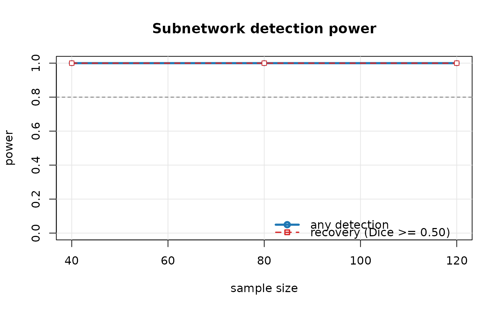

Plot a power curve
Arguments
- x
A
subnet_powerobject.- which
Curves to draw:
"both"(default),"any"or"recovery".- ci
Draw pointwise Monte Carlo 95% intervals.
- target
Optional horizontal reference line, e.g.
0.8.- ...
Passed to
graphics::plot().
Examples
# \donttest{
pw <- power_curve(n = c(40, 80, 120), n_nodes = 60, cluster_size = 12,
f2 = 0.2, n_sim = 20, n_perm = 99, seed = 1)
#> n = 40 (20 replicates)
#> n = 80 (20 replicates)
#> n = 120 (20 replicates)
plot(pw, target = 0.8)

# }